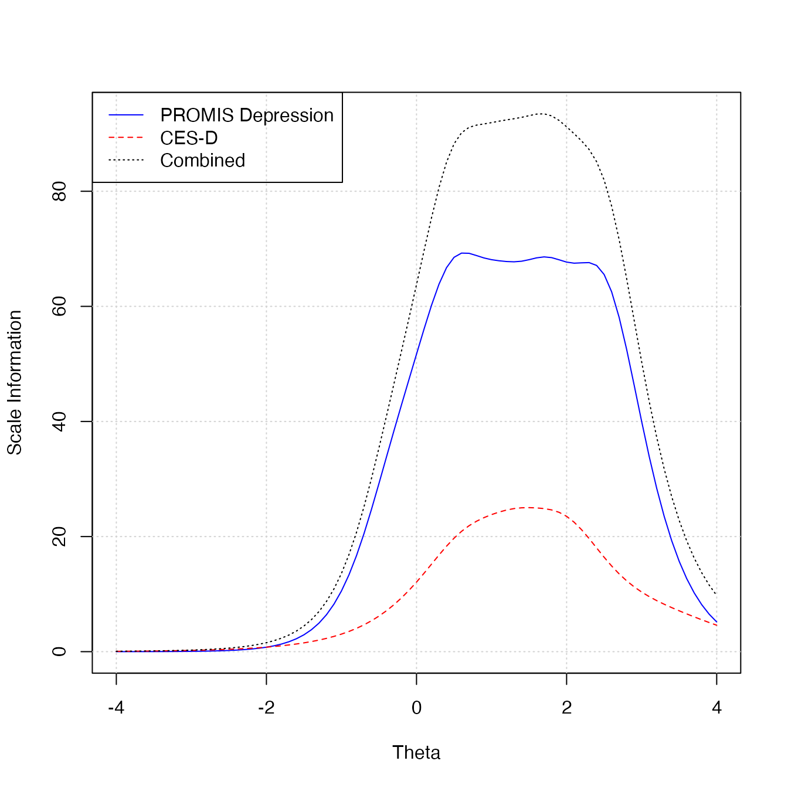

Introduction
This vignette explains how to perform scale linking with the PROsetta package. For the purpose of illustration, we replicate the linking between two scales as was studied by Choi, Schalet, Cook, and Cella (2014):
- Scale to be linked: The Center for Epidemiologic Studies Depression scale (CES-D); 20 items, 1-4 points each, raw score range = 20-80.
- Anchoring scale: The PROMIS Depression scale; 28 items, 1-5 points each, raw score range = 28-140.
Load datasets
The first step is to load the input dataset using
loadData(). Scale linking requires three input parts: (1)
response data, (2) item map, and (3) anchor data. In this vignette, we
use example datasets response_dep,
itemmap_dep, anchor_dep. These are included in
the PROsetta package.
d <- loadData(
response = response_dep,
itemmap = itemmap_dep,
anchor = anchor_dep
)## item_id guessed as : item_id
## person_id guessed as : prosettaid
## scale_id guessed as : scale_id
## model_id guessed as : item_modelThe loadData() function requires three arguments. These
are described in detail below.
Response data
The response data contains individual item responses on both scales. The data must include the following columns.
- Person ID column. The response data must have a column for unique IDs of participants.
- The example data
response_depusesprosettaidas the column name, but it can be named differently as long as the same column name does not appear in other data parts. For example, see how item mapitemmap_depand anchor dataanchor_depdo not have a column namedprosettaid.
- The example data
- Item response columns. The response data must include item response columns
- The item response columns must be named using their item IDs.
- The item IDs must match item IDs appearing in item map and anchor
data. For example, see how the item IDs appearing in
response_depexactly matches item IDs appearing initemmap_dep. Also, see how the item IDs appearing inanchor_depare a subset of item IDs appearing inresponse_dep.
- The item IDs must match item IDs appearing in item map and anchor
data. For example, see how the item IDs appearing in
Below is an example of response data.
head(response_dep)## prosettaid EDDEP04 EDDEP05 EDDEP06 EDDEP07 EDDEP09 EDDEP14 EDDEP17 EDDEP19
## 1 100048 1 1 1 1 1 1 1 1
## 2 100049 1 1 1 1 1 1 1 1
## 3 100050 1 1 1 1 1 1 2 1
## 4 100051 1 2 1 1 1 2 2 2
## 5 100052 1 1 1 1 1 1 1 1
## 6 100053 1 1 1 1 1 1 1 1
## EDDEP21 EDDEP22 EDDEP23 EDDEP26 EDDEP27 EDDEP28 EDDEP29 EDDEP30 EDDEP31
## 1 2 1 1 1 1 1 1 2 2
## 2 1 1 1 2 1 1 1 1 1
## 3 2 1 1 2 2 2 2 2 2
## 4 2 1 2 2 1 1 2 1 2
## 5 1 1 1 1 1 1 1 1 1
## 6 1 1 2 2 1 1 1 1 1
## EDDEP35 EDDEP36 EDDEP39 EDDEP41 EDDEP42 EDDEP44 EDDEP45 EDDEP46 EDDEP48
## 1 1 2 1 1 2 2 1 2 1
## 2 1 1 1 1 1 1 1 1 1
## 3 1 2 1 2 2 2 1 2 2
## 4 2 2 1 1 1 1 1 2 1
## 5 1 1 1 1 1 1 1 1 1
## 6 1 2 1 1 3 2 1 1 1
## EDDEP50 EDDEP54 CESD1 CESD2 CESD3 CESD4 CESD5 CESD6 CESD7 CESD8 CESD9 CESD10
## 1 1 1 1 1 1 1 1 1 1 1 1 1
## 2 1 1 1 1 1 1 1 1 1 1 1 1
## 3 2 2 1 1 1 1 2 1 1 1 1 1
## 4 1 2 1 1 1 1 1 2 2 1 1 1
## 5 1 1 1 1 1 1 1 1 1 1 1 1
## 6 1 1 1 1 1 1 1 1 1 1 1 1
## CESD11 CESD12 CESD13 CESD14 CESD15 CESD16 CESD17 CESD18 CESD19 CESD20
## 1 2 1 1 1 1 1 1 1 1 1
## 2 2 1 1 1 1 1 1 1 1 1
## 3 2 1 2 1 1 1 1 1 1 2
## 4 1 1 4 1 1 1 1 1 1 2
## 5 1 1 1 1 1 1 1 1 1 1
## 6 2 1 1 1 1 1 1 1 1 1Item map data
The item map data contains information on which items belong to which scale. The following columns are required.
- Scale ID column. The item map data must have a scale ID column indicating which scale each item belongs to.
- The example data
itemmap_depusesscale_idas the column name, but it can be named differently as long as the same column name does not appear in other data parts.
- The example data
- Also, the example data
itemmap_depcodes the anchor scale as Scale 1 and the scale to be linked as Scale 2, but these can be flipped if the user wants to do so.
- Also, the example data
- Item ID column. The item map data must have an item ID column.
- The item IDs must match item IDs appearing in other data parts. For
example, see how the item IDs appearing in
itemmap_depexactly matches item IDs appearing inresponse_dep. Also, see how the item IDs appearing inanchor_depare a subset of item IDs appearing initemmap_dep.
- The item IDs must match item IDs appearing in other data parts. For
example, see how the item IDs appearing in
- The example data
itemmap_depusesitem_idas the column name, but it can be named differently as long as item ID columns use the same name across data parts. For example, see howitemmap_depandanchor_depboth useitem_id.
- The example data
- Item model column. The item map data must have an item model column.
- Accepted values are
GRfor graded response model, andGPCfor generalized partial credit model.
- Accepted values are
- The example data
itemmap_depusesitem_modelas the column name, but it can be named differently as long as item model columns use the same name across data parts. For example, see howitemmap_depandanchor_depboth useitem_model.
- The example data
-
ncat: The item map data must have a column namedncatcontaining the number of response categories of each item.
Below is an example of item map data.
head(itemmap_dep)## scale_id item_id item_model ncat
## 1 1 EDDEP04 GR 5
## 2 1 EDDEP05 GR 5
## 3 1 EDDEP06 GR 5
## 4 1 EDDEP07 GR 5
## 5 1 EDDEP09 GR 5
## 6 1 EDDEP14 GR 5Anchor data
The anchor data contains item parameters for the anchoring scale. The following columns are required:
- Item ID column. The anchor data must have an item ID column.
- The item IDs must match item IDs appearing in other data parts. For
example, see how the item IDs appearing in
anchor_depare a subset of item IDs appearing initemmap_dep.
- The item IDs must match item IDs appearing in other data parts. For
example, see how the item IDs appearing in
- The example data
anchor_depusesitem_idas the column name, but it can be named differently as long as item ID columns use the same name across data parts. For example, see howitemmap_depandanchor_depboth useitem_id.
- The example data
- Item model column. The anchor data must have an item model column.
- Accepted values are
GRfor graded response model, andGPCfor generalized partial credit model.
- Accepted values are
- The example data
anchor_depusesitem_modelas the column name, but it can be named differently as long as item model columns use the same name across data parts. For example, see howitemmap_depandanchor_depboth useitem_model.
- The example data
-
Item parameter columns. The anchor data must have
item parameter columns named
a,cb1,cb2, and so on. These must be in the A/B parameterization (i.e., traditional IRT parameterization for unidimensional models) so that item probabilities are calculated based on .
Below is an example of anchor data.
head(anchor_dep)## item_id item_model a cb1 cb2 cb3 cb4
## 1 EDDEP04 GR 4.261422 0.4010694 0.9756732 1.696300 2.444072
## 2 EDDEP05 GR 3.931743 0.3049418 0.9130961 1.593476 2.411682
## 3 EDDEP06 GR 4.144759 0.3501130 0.9153482 1.678203 2.470526
## 4 EDDEP07 GR 2.801804 0.1477485 0.7723478 1.602715 2.538057
## 5 EDDEP09 GR 3.657433 0.3119582 0.9818088 1.782108 2.571127
## 6 EDDEP14 GR 2.333381 0.1859934 0.9473173 1.728770 2.632643Preliminary analysis
Preliminary analyses are commonly conducted before the main scale linking to check for various statistical aspects of the data. The PROsetta package offers a set of helper functions for preliminary analyses.
Basic descriptive statistics
The frequency distribution of each item in the response data is
obtained by runFrequency().
freq_table <- runFrequency(d)
head(freq_table)## 1 2 3 4 5
## EDDEP04 526 112 66 29 14
## EDDEP05 488 118 91 37 12
## EDDEP06 502 119 85 30 10
## EDDEP07 420 155 107 49 16
## EDDEP09 492 132 89 25 9
## EDDEP14 445 150 101 37 14The frequency distribution of the summed scores for the combined
scale can be plotted as a histogram with plot(). The
required argument is a PROsetta_data object created with
loadData(). The optional scale argument
specifies for which scale the summed score should be created. Setting
scale = "combined" plots the summed score distribution for
the combined scale.
plot(d, scale = "combined", title = "Combined scale")
The user can also generate the summed score distribution for the
first or second scale by specifying scale = 1 or
scale = 2.
Basic descriptive statistics are obtained for each item by
runDescriptive().
desc_table <- runDescriptive(d)
head(desc_table)## n mean sd median trimmed mad min max range skew kurtosis se
## EDDEP04 747 1.52 0.94 1 1.30 0 1 5 4 1.91 3.01 0.03
## EDDEP05 746 1.62 0.99 1 1.42 0 1 5 4 1.54 1.50 0.04
## EDDEP06 746 1.56 0.94 1 1.37 0 1 5 4 1.66 2.01 0.03
## EDDEP07 747 1.78 1.05 1 1.59 0 1 5 4 1.23 0.59 0.04
## EDDEP09 747 1.56 0.91 1 1.38 0 1 5 4 1.62 1.98 0.03
## EDDEP14 747 1.69 1.00 1 1.51 0 1 5 4 1.38 1.12 0.04Classical reliability analysis
Classical reliability statistics can be obtained by
runClassical(). By default, the analysis is performed for
the combined scale.
classical_table <- runClassical(d)
summary(classical_table$alpha$combined)##
## Reliability analysis
## raw_alpha std.alpha G6(smc) average_r S/N ase mean sd median_r
## 0.98 0.98 0.99 0.53 54 9e-04 1.7 0.69 0.54From the above summary, we see that the combined scale (48 items) has a good reliability (alpha = 0.98).
The user can set scalewise = TRUE to request an analysis
for each scale separately in addition to the combined scale.
classical_table <- runClassical(d, scalewise = TRUE)
summary(classical_table$alpha$`2`)##
## Reliability analysis
## raw_alpha std.alpha G6(smc) average_r S/N ase mean sd median_r
## 0.93 0.94 0.95 0.42 15 0.0035 1.5 0.56 0.42From the above summary, we see that the scale to be linked (Scale 2; CES-D) has a good reliability (alpha = 0.93).
Specifying omega = TRUE returns the McDonald’s
coefficients as well.
classical_table <- runClassical(d, scalewise = TRUE, omega = TRUE)
classical_table$omega$combined # omega values for combined scale
classical_table$omega$`1` # omega values for each scale, created when scalewise = TRUE
classical_table$omega$`2` # omega values for each scale, created when scalewise = TRUEAdditional arguments can be supplied to runClassical()
to pass onto psych::omega().
classical_table <- runClassical(d, scalewise = TRUE, omega = TRUE, nfactors = 5) # not runDimensionality analysis
A key assumption in item response theory is the unidimensionality
assumption. Dimensionality analysis is performed with confirmatory
factor analysis by runCFA(), which fits a one-factor model
to the data. Setting scalewise = TRUE performs the
dimensionality analysis for each scale separately in addition to the
combined scale.
out_cfa <- runCFA(d, scalewise = TRUE)runCFA() calls for lavaan::cfa() internally
and can pass additional arguments onto it.
out_cfa <- runCFA(d, scalewise = TRUE, std.lv = TRUE) # not runThe CFA result for the combined scale is stored in the
combined slot, and if scalewise = TRUE, the
analysis for each scale is also stored in each numbered slot.
out_cfa$combined## lavaan 0.6-19 ended normally after 23 iterations
##
## Estimator DWLS
## Optimization method NLMINB
## Number of model parameters 220
##
## Used Total
## Number of observations 731 747
##
## Model Test User Model:
## Standard Scaled
## Test Statistic 4227.611 4700.781
## Degrees of freedom 1080 1080
## P-value (Chi-square) 0.000 0.000
## Scaling correction factor 1.046
## Shift parameter 657.455
## simple second-order correction
out_cfa$`1`## lavaan 0.6-19 ended normally after 16 iterations
##
## Estimator DWLS
## Optimization method NLMINB
## Number of model parameters 140
##
## Used Total
## Number of observations 738 747
##
## Model Test User Model:
## Standard Scaled
## Test Statistic 863.527 1434.277
## Degrees of freedom 350 350
## P-value (Chi-square) 0.000 0.000
## Scaling correction factor 0.678
## Shift parameter 160.257
## simple second-order correction
out_cfa$`2`## lavaan 0.6-19 ended normally after 20 iterations
##
## Estimator DWLS
## Optimization method NLMINB
## Number of model parameters 80
##
## Used Total
## Number of observations 740 747
##
## Model Test User Model:
## Standard Scaled
## Test Statistic 1106.148 1431.797
## Degrees of freedom 170 170
## P-value (Chi-square) 0.000 0.000
## Scaling correction factor 0.812
## Shift parameter 69.205
## simple second-order correctionCFA fit indices can be obtained by using summary() from
the lavaan package. For the combined scale:
lavaan::summary(out_cfa$combined, fit.measures = TRUE, standardized = TRUE, estimates = FALSE)## lavaan 0.6-19 ended normally after 23 iterations
##
## Estimator DWLS
## Optimization method NLMINB
## Number of model parameters 220
##
## Used Total
## Number of observations 731 747
##
## Model Test User Model:
## Standard Scaled
## Test Statistic 4227.611 4700.781
## Degrees of freedom 1080 1080
## P-value (Chi-square) 0.000 0.000
## Scaling correction factor 1.046
## Shift parameter 657.455
## simple second-order correction
##
## Model Test Baseline Model:
##
## Test statistic 793198.138 91564.633
## Degrees of freedom 1128 1128
## P-value 0.000 0.000
## Scaling correction factor 8.758
##
## User Model versus Baseline Model:
##
## Comparative Fit Index (CFI) 0.996 0.960
## Tucker-Lewis Index (TLI) 0.996 0.958
##
## Robust Comparative Fit Index (CFI) 0.783
## Robust Tucker-Lewis Index (TLI) 0.774
##
## Root Mean Square Error of Approximation:
##
## RMSEA 0.063 0.068
## 90 Percent confidence interval - lower 0.061 0.066
## 90 Percent confidence interval - upper 0.065 0.070
## P-value H_0: RMSEA <= 0.050 0.000 0.000
## P-value H_0: RMSEA >= 0.080 0.000 0.000
##
## Robust RMSEA 0.118
## 90 Percent confidence interval - lower 0.115
## 90 Percent confidence interval - upper 0.121
## P-value H_0: Robust RMSEA <= 0.050 0.000
## P-value H_0: Robust RMSEA >= 0.080 1.000
##
## Standardized Root Mean Square Residual:
##
## SRMR 0.051 0.051and also for each scale separately:
lavaan::summary(out_cfa$`1`, fit.measures = TRUE, standardized = TRUE, estimates = FALSE) # not run
lavaan::summary(out_cfa$`2`, fit.measures = TRUE, standardized = TRUE, estimates = FALSE) # not runItem parameter calibration
runCalibration() can be used to perform free IRT
calibration for diagnostic purposes. runCalibration() calls
mirt::mirt() internally, and additional arguments can be
supplied to be passed onto mirt, e.g., to increase the
number of EM cycles to 1000, as follows:
out_calib <- runCalibration(d, technical = list(NCYCLES = 1000))As a safeguard, if the model fit process does not converge,
runCalibration() explicitly raises an error and does not
return its results.
out_calib <- runCalibration(d, technical = list(NCYCLES = 10))## Warning: EM cycles terminated after 10 iterations.## Error in runCalibration(d, technical = list(NCYCLES = 10)): calibration did not converge: increase iteration limit by adjusting the 'technical' argument, e.g., technical = list(NCYCLES = 510)The output object from runCalibration() can be used to
generate diagnostic output with functions from the mirt
package:
mirt::itemfit(out_calib, empirical.plot = 1)
mirt::itemplot(out_calib, item = 1, type = "info")
mirt::itemfit(out_calib, "S_X2", na.rm = TRUE)Scale information functions can be plotted with
plotInfo. The two required arguments are an output object
from runCalibration() and a PROsetta object
from loadData(). The additional arguments specify the
labels, colors, and line types for each scale and the combined scale.
The last values in arguments scale_label,
color, lty represent the values for the
combined scale.
plotInfo(
out_calib, d,
scale_label = c("PROMIS Depression", "CES-D", "Combined"),
color = c("blue", "red", "black"),
lty = c(1, 2, 3)
)
Scale linking: IRT-based
Scale linking can be performed in multiple ways. This section describes the workflow for performing an IRT-based linking.
Obtain linked item parameters
The first step of IRT-based linking is to obtain linked item
parameters. This is done by runLinking(), which performs
scale linking based on supplied anchor item parameters. A variety of
scale linking methods are available in the PROsetta
package.
Fixed parameter calibration method
A fixed-parameter calibration is performed by constraining item parameters of anchor items to anchor data values, and freely estimating item parameters for non-anchor items. The mean and the variance of is freely estimated to capture the difference between the current participant group relative to the anchor participant group, assuming the anchor group follows .
Scale linking through fixed parameter calibration is performed by
setting method = "FIXEDPAR".
link_fixedpar <- runLinking(d, method = "FIXEDPAR")From the output, the linked parameters are stored in the
$ipar_linked slot.
head(link_fixedpar$ipar_linked)## item_id item_model a b1 b2 b3 b4
## EDDEP04 EDDEP04 GR 4.261422 0.4010694 0.9756732 1.696300 2.444072
## EDDEP05 EDDEP05 GR 3.931743 0.3049418 0.9130961 1.593476 2.411682
## EDDEP06 EDDEP06 GR 4.144759 0.3501130 0.9153482 1.678203 2.470526
## EDDEP07 EDDEP07 GR 2.801804 0.1477485 0.7723478 1.602715 2.538057
## EDDEP09 EDDEP09 GR 3.657433 0.3119582 0.9818088 1.782108 2.571127
## EDDEP14 EDDEP14 GR 2.333381 0.1859934 0.9473173 1.728770 2.632643The group characteristics are stored in the $mu_sigma
slot.
link_fixedpar$mu_sigma## $mu
## F1
## -0.05974137
##
## $sigma
## F1
## F1 0.950464
##
## $sd
## F1
## 0.9749174
##
## $corr
## F1
## F1 1From the above output, we see that the participant group in
response_dep had a slightly lower
of -0.060 compared to the anchor group, and a slightly
smaller variance of 0.950 compared to the anchor group.
Linear transformation methods
Linear transformation methods determine linear transformation constants, i.e., a slope and an intercept, to transform freely estimated item parameters to the metric defined by the anchor items. Linear transformation methods include Mean-Mean, Mean-Sigma, Haebara, and Stocking-Lord methods.
Scale linking through linear transformation is performed by setting
the method argument to one of the following options:
-
MM(Mean-Mean) -
MS(Mean-Sigma) -
HB(Haebara) -
SL(Stocking-Lord)
link_sl <- runLinking(d, method = "SL", technical = list(NCYCLES = 1000))
link_slThe item parameter estimates linked to the anchor metric are stored
in the $ipar_linked slot.
head(link_sl$ipar_linked)## item_id item_model a b1 b2 b3 b4
## 1 EDDEP04 GR 3.793029 0.46953342 1.0795406 1.723902 2.349076
## 2 EDDEP05 GR 3.320320 0.33290477 0.8987386 1.652727 2.495477
## 3 EDDEP06 GR 3.425877 0.38780569 1.0150119 1.791368 2.554674
## 4 EDDEP07 GR 2.515474 0.07923606 0.8041343 1.613014 2.489916
## 5 EDDEP09 GR 3.473048 0.33392750 1.0061990 1.872558 2.581146
## 6 EDDEP14 GR 2.593291 0.16626048 0.8908936 1.766002 2.578976Transformation constants (A = slope; B = intercept) for the specified
linear transformation method are stored in the $constants
slot.
link_sl$constants## A B
## 0.982324 -0.064233Calibrated projection (using fixed-parameter calibration)
Calibrated projection is an IRT-based multidimensional scale linking method. Calibrated projection is performed through a multidimensional model where the items in one scale measures its own dimension, and items in another scale measures another dimension.
In this vignette, the anchor scale (PROMIS Depression) was coded as Scale 1, and the scale to be linked (CES-D) was coded as Scale 2. This leads to Scale 1 items having non-zero -parameters in dimension 1, and Scale 2 items having non-zero -parameters in dimensions 2.
For the purpose of scale linking, calibrated projection can be performed in conjunction with the fixed-parameter calibration technique. The anchor item parameters are constrained to their anchor data values, and item parameters in the non-anchor items are freely estimated. The mean/variance of in the anchor dimension are freely estimated to capture the difference between the current participant group relative to the anchor participant group, assuming the anchor group follows . The mean/variance of in the scale-to-be-linked dimension are constrained to be 0/1.
In this vignette, this means that the mean/variance of dimension 1 (the anchor dimension) are freely estimated, and the mean/variance of dimension 2 are constrained to be 0/1.
Scale linking through calibrated projection (with fixed parameter
calibration) is performed by setting method = "CP".
link_cp <- runLinking(d, method = "CP")From the output, the linked parameters are stored in the
$ipar_linked slot. See how there are two
-parameters,
with items in the anchor scale (PROMIS Depression) loaded onto dimension
1.
head(link_cp$ipar_linked)## item_id item_model a1 a2 d1 d2 d3
## EDDEP04 EDDEP04 GR 4.261422 0 -1.7091263 -4.157755 -7.228651
## EDDEP05 EDDEP05 GR 3.931743 0 -1.1989529 -3.590059 -6.265139
## EDDEP06 EDDEP06 GR 4.144759 0 -1.4511339 -3.793897 -6.955749
## EDDEP07 EDDEP07 GR 2.801804 0 -0.4139624 -2.163967 -4.490492
## EDDEP09 EDDEP09 GR 3.657433 0 -1.1409664 -3.590900 -6.517942
## EDDEP14 EDDEP14 GR 2.333381 0 -0.4339935 -2.210452 -4.033879
## d4
## EDDEP04 -10.415221
## EDDEP05 -9.482114
## EDDEP06 -10.239733
## EDDEP07 -7.111139
## EDDEP09 -9.403727
## EDDEP14 -6.142961The group characteristics are stored in the $mu_sigma
slot.
link_cp$mu_sigma## $mu
## F1 F2
## -0.07033119 0.00000000
##
## $sigma
## F1 F2
## F1 0.9721365 0.9064387
## F2 0.9064387 1.0000000
##
## $sd
## F1 F2
## 0.9859698 1.0000000
##
## $corr
## F1 F2
## F1 1.0000000 0.9193372
## F2 0.9193372 1.0000000From the above output, we see that the participant group in
response_dep had a slightly lower
of -0.070 compared to the anchor group, and a slightly
smaller variance of 0.971 compared to the anchor group.
Also, we see that the constructs represented by the two scales had a
correlation of 0.919.
Making crosswalk tables
The second step of IRT-based scale linking is to generate
raw-score-to-scale-score (RSSS) crosswalk tables. This is done by
runRSSS(). The runRSSS() function requires the
dataset object created by loadData(), and the output object
from runLinking().
rsss_fixedpar <- runRSSS(d, link_fixedpar)The output from runRSSS() includes three crosswalk
tables (labeled as 1, 2, and
combined), one for each scale and the third one for the
combined scale. In this vignette, the anchor scale (PROMIS Depression)
was coded as Scale 1 and the scale to be linked (CES-D) was coded as
Scale 2.
The crosswalk table for the scale to be linked (CES-D; Scale 2) is shown here as an example.
## raw_2 tscore tscore_se eap eap_se escore_1 escore_2 escore_combined
## 1 20 34.5 6.0 -1.554 0.599 28.455 21.105 49.560
## 2 21 38.6 5.1 -1.139 0.509 29.340 21.851 51.192
## 3 22 41.1 4.7 -0.892 0.473 30.503 22.523 53.026
## 4 23 42.9 4.5 -0.713 0.455 31.836 23.154 54.991
## 5 24 44.7 4.1 -0.534 0.412 33.735 23.950 57.685
## 6 25 46.2 3.8 -0.382 0.382 35.853 24.777 60.630The columns in the crosswalk tables include:
-
raw_2: a raw score level in Scale 2 (CES-D; 20 items, 1-4 points each, raw score range = 20-80). -
tscore: the corresponding T-score in the anchor group metric. -
tscore_se: the standard error associated with the T-score. -
eap: the corresponding in the anchor group metric. -
eap_se: the standard error associated with the value. -
escore_1: the expected Scale 1 (PROMIS Depression) raw score derived from . -
escore_2: the expected Scale 2 (CES-D) raw score derived from . -
escore_combined: the expected Combined Scale raw score derived from .
For example, row 6 in the above table shows:
- A raw score 25 points in CES-D corresponds to a T-score of 46.2 in the anchor group.
- A raw score 25 points in CES-D corresponds to in the anchor group, assuming the anchor group metric is .
- A raw score 25 points in CES-D corresponds to an expected raw score of 35.853 in the PROMIS Depression scale (raw score range = 28-140).
- A raw score 25 points in CES-D corresponds to an expected raw score of 60.630 in the combined scale (raw score range = 48-220).
Scale linking: score-based
This section describes the workflow for performing a score-based
scale linking. This is done by runEquateObserved(), which
performs equipercentile linking using observed raw sum-scores. The
function removes cases with missing responses to be able to generate
correct sum-scores in concordance tables.
This function requires four arguments:
-
scale_from: the scale ID of the scale to be linked. -
scale_to: the scale ID of the anchor scale. -
eq_type: the type of equating to be performed,equipercentilefor this example. See?equate::equatefor details. -
smooth: the type of presmoothing to perform
Equipercentile linking: raw to raw
By default, runEquateObserved() performs raw-raw
equipercentile linking. In this example, each raw sum-score in the
scale-to-be-linked (Scale 2; CES-D, raw score range 20-80) is linked to
a corresponding raw sum-score in the anchor scale (Scale 1; PROMIS
Depression, raw score range 28-140) with loglinear presmoothing.
rsss_equate_raw <- runEquateObserved(
d,
scale_from = 2, # CES-D (scale to be linked)
scale_to = 1, # PROMIS Depression (anchor scale)
eq_type = "equipercentile", smooth = "loglinear"
)The crosswalk table can be obtained from the concordance
slot:
head(rsss_equate_raw$concordance)## raw_2 raw_1 raw_1_se raw_1_se_boot
## 1 20 28.26881 0.1620936 0.1305916
## 2 21 29.88299 0.3370778 0.2738646
## 3 22 31.53492 0.5039397 0.4021354
## 4 23 33.26052 0.6025077 0.5288394
## 5 24 35.04116 0.7605541 0.6391904
## 6 25 36.88206 0.9289581 0.8576881From row 6 in the above output, we see that:
- A raw score 25 points in CES-D corresponds to an expected raw score of 36.882 in the PROMIS Depression scale (raw score range = 28-140).
Equipercentile method: raw to T-score
Alternatively, raw sum-scores can be linked to T-scores by specifying
type_to = "tscore" in runEquateObserved(). In
the following example, the raw sum-scores from the scale-to-be-linked
(Scale 2; CES-D, raw score range 20-80) are linked to T-score
equivalents in the anchor scale (Scale 1; PROMIS Depression, mean = 50
and SD = 10).
This requires a separate RSSS table to be supplied for the purpose of converting anchor scale raw scores to T-scores.
rsss_equate_tscore <- runEquateObserved(
d,
scale_from = 2, # CES-D (scale to be linked)
scale_to = 1, # PROMIS Depression (anchor scale)
type_to = "tscore",
rsss = rsss_fixedpar, # used to convert PROMIS Depression (anchor scale) raw to T
eq_type = "equipercentile", smooth = "loglinear"
)Again, the crosswalk table can be retrieved from the
concordance slot:
head(rsss_equate_tscore$concordance)## raw_2 tscore_1 tscore_1_se tscore_1_se_boot
## 1 20 33.60138 0.1015887 0.3741251
## 2 21 38.46567 0.2970127 1.1185746
## 3 22 41.72102 0.5244657 0.5600030
## 4 23 43.93269 0.7283759 0.5983501
## 5 24 45.56073 0.9008862 0.5708281
## 6 25 46.96056 1.0676547 0.5935811From row 6 in the above output, we see that:
- A raw score 25 points in CES-D corresponds to a T-score of 46.961 in the PROMIS Depression scale.
Comparison between linking methods
The plot below shows the scale link produced by the equipercentile method (red dotted line) and the link produced by the fixed-parameter calibration method (blue solid line).
plot(
rsss_fixedpar$`2`$raw_2,
rsss_fixedpar$`2`$tscore,
xlab = "CES-D (Scale to be linked), raw score",
ylab = "PROMIS Depression (Anchor scale), T-score",
type = "l", col = "blue")
lines(
rsss_equate_tscore$concordance$raw_2,
rsss_equate_tscore$concordance$tscore_1,
lty = 2, col = "red")
grid()
legend(
"topleft",
c("Fixed-Parameter Calibration", "Equipercentile Linking"),
lty = 1:2, col = c("blue", "red"), bg = "white"
)To better understand the performance of the two methods, we add a best-case method where pattern-scoring is used on the response data to obtain estimates.
Raw scores from Scale 2
To begin with, we create an object scores using
getScaleSum() to contain raw summed scores on Scale 2
(i.e., CES-D). NA will result for any respondents with one
or more missing responses on Scale 2. We could also create a summed
score variable for Scale 1 using the same function, e.g.,
getScaleSum(d, 1).
scores <- getScaleSum(d, 2)
head(scores)## prosettaid raw_2
## 1 100048 21
## 2 100049 21
## 3 100050 24
## 4 100051 26
## 5 100052 20
## 6 100053 21PROMIS T-scores based on item response patterns
To establish an ideal case scenario, we obtain
estimates on the anchor scale (Scale 1; PROMIS Depression) based on item
response patterns using the getTheta() function.
The getTheta() function requires three arguments:
- The
dataargument requires a data object fromloadData(). In this example, we use the object we created earlier. - The
iparargument requires item parameter estimates for all items. Here, we use the item parameter estimates that were previously obtained from fixed-parameter calibration,out_link_fixedpar$ipar_linked. - The
scaleargument requires a scale ID to perform estimation on. Here, we use Scale 1 (the anchor scale; PROMIS Depression).
The function returns participant-wise EAP estimates and their associated standard errors:
theta_promis <- getTheta(data = d, ipar = link_fixedpar$ipar_linked, scale = 1)$theta
head(theta_promis)## prosettaid theta_eap theta_se
## 1 100048 -0.42410653 0.1606312
## 2 100049 -1.15269342 0.3229802
## 3 100050 0.05281656 0.1176509
## 4 100051 -0.04622278 0.1238298
## 5 100052 -1.65063866 0.5049212
## 6 100053 -0.55824065 0.1812502The estimates for PROMIS Depression are then converted to T-scores.
t_promis_pattern <- data.frame(
prosettaid = theta_promis$prosettaid,
t_promis_pattern = round(theta_promis$theta_eap * 10 + 50, 1)
)
head(t_promis_pattern)## prosettaid t_promis_pattern
## 1 100048 45.8
## 2 100049 38.5
## 3 100050 50.5
## 4 100051 49.5
## 5 100052 33.5
## 6 100053 44.4These T-scores will be used as best-case scenario values in a later stage for comparing different RSSS tables from different methods.
We then merge the PROMIS Depression T-scores with CES-D raw scores.
## prosettaid raw_2 t_promis_pattern
## 1 100048 21 45.8
## 2 100049 21 38.5
## 3 100050 24 50.5
## 4 100051 26 49.5
## 5 100052 20 33.5
## 6 100053 21 44.4From the above output, we see that participant 100048
(row 1) had scored a raw-score of 21 on CES-D, and their PROMIS
Depression T-score was 45.8. See how participants with the same raw
score of 21 have different T-scores in the above output, from the usage
of pattern scoring.
PROMIS T-scores based on RSSS table from fixed-parameter calibration
Second, we use the raw-score-to-scale-score (RSSS) crosswalk table obtained above to map raw scores in the scale to be linked (Scale 2; CES-D) onto T-scores on the anchor scale (Scale 1; PROMIS Depression).
rsss_fixedpar <- data.frame(
raw_2 = rsss_fixedpar[["2"]]$raw_2,
t_promis_rsss_fixedpar = round(rsss_fixedpar[["2"]]$tscore, 1)
)
scores <- merge(scores, rsss_fixedpar, by = "raw_2")
head(scores)## raw_2 prosettaid t_promis_pattern t_promis_rsss_fixedpar
## 1 20 100086 40.7 34.5
## 2 20 103937 33.5 34.5
## 3 20 100622 38.5 34.5
## 4 20 103946 33.5 34.5
## 5 20 101432 38.6 34.5
## 6 20 103645 33.5 34.5From the above output, we see that CES-D raw scores of 20 were mapped to T-scores of 34.5 using the RSSS table.
PROMIS T-scores based on RSSS table from equipercentile linking
Next, we use the concordance table from equipercentile linking to map
each raw summed score on Scale 2 onto a T-score on the PROMIS Depression
metric, t_cesd_eqp.
rsss_eqp <- data.frame(
raw_2 = rsss_equate_tscore$concordance$raw_2,
t_promis_rsss_eqp = round(rsss_equate_tscore$concordance$tscore_1, 1)
)
scores <- merge(scores, rsss_eqp, by = "raw_2")
head(scores)## raw_2 prosettaid t_promis_pattern t_promis_rsss_fixedpar t_promis_rsss_eqp
## 1 20 100086 40.7 34.5 33.6
## 2 20 103937 33.5 34.5 33.6
## 3 20 100622 38.5 34.5 33.6
## 4 20 103946 33.5 34.5 33.6
## 5 20 101432 38.6 34.5 33.6
## 6 20 103645 33.5 34.5 33.6From the above output, we see that CES-D raw scores of 20 were mapped to T-scores of 33.6 using the RSSS table.
Comparison of RSSS tables
Finally, use compareScores() to compare which RSSS table
gives closer results to pattern-scoring.
c_fixedpar <- compareScores(
scores$t_promis_pattern, scores$t_promis_rsss_fixedpar)
c_eqp <- compareScores(
scores$t_promis_pattern, scores$t_promis_rsss_eqp)
stats <- rbind(c_fixedpar, c_eqp)
rownames(stats) <- c("Fixed-parameter calibration", "Equipercentile")
stats## corr mean sd rmsd mad
## Fixed-parameter calibration 0.8212425 0.09425445 5.772118 5.772887 4.442818
## Equipercentile 0.8153648 -0.01121751 5.849425 5.849436 4.450889